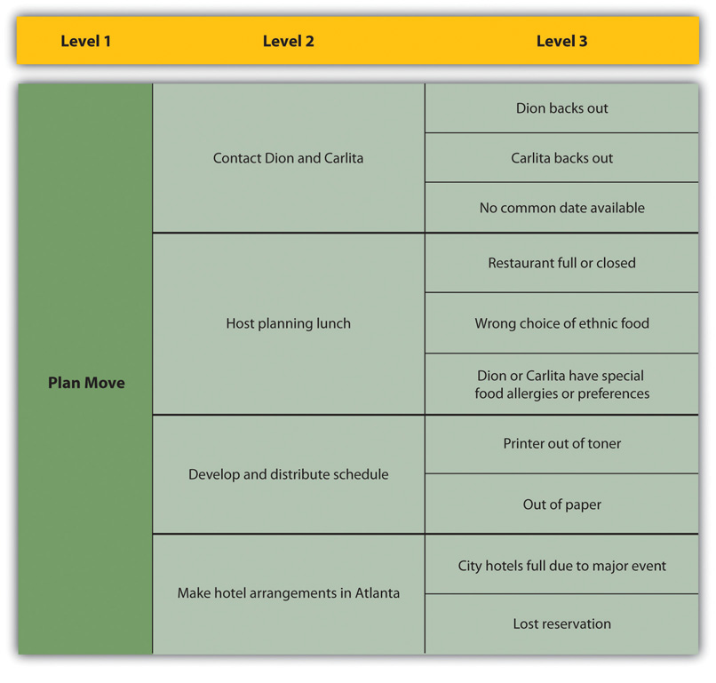
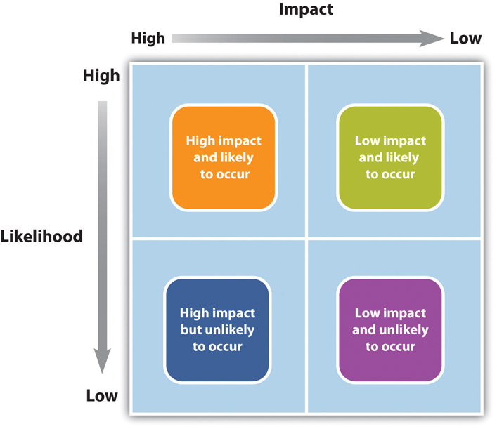

Managing risks on projects is a process that includes risk assessment and a mitigation strategy for those risks. Risk assessmentIdentification of the possibility for loss due to an event and an estimate of its effect. includes both the identification of potential risk and the evaluation of the potential impact of the risk. A risk mitigation planPlan to reduce or eliminate loss from unexpected events. is designed to eliminate or minimize the impact of the risk eventsPossible occurrence that may have a negative impact on the project.—occurrences that have a negative impact on the project. Identifying risk is both a creative and a disciplined process. The creative process includes brainstorming sessions where the team is asked to create a list of everything that could go wrong. All ideas are welcome at this stage with the evaluation of the ideas coming later.
A more disciplined process involves using checklists of potential risks and evaluating the likelihood that those events might happen on the project. Some companies and industries developed risk checklists based on experience from past projects. The Construction Industry InstituteConstruction Industry Institute Cost/Schedule Task Force, Management of Project Risks and Uncertainties (Austin, TX: Construction Industry Institute, 1989). developed a detailed checklist of potential risks based on the experience of several large construction companies executing major construction projects. These checklists can be helpful to the project manager and project team in identifying both specific risks on the checklist and expanding the thinking of the team. The past experience of the project team, project experience within the company, and experts in the industry can be valuable sources for identifying potential risk on a project.
Identifying the sources of risk by category is another method for exploring potential risk on a project. Some examples of categories for potential risks include the following:
The people category can be subdivided into risks associated with the people. Examples of people risks include the risk of not finding the skills needed to execute the project or the sudden unavailability of key people on the project. David HillsonDavid Hillson, “Using a Risk Breakdown Structure in Project Management,” Journal of Facilities Management 2, no. 1 (2003): 85–97. uses the same framework as the work breakdown structure (WBS) for developing a risk breakdown structure (RBS)Organization of risks associated with each activity in the work breakdown structure using a similar graphic approach.. A risk breakdown structure organizes the risks that have been identified into categories using a table with increasing levels of detail to the right.
In John’s move, John makes a list of things that might go wrong with his project and uses his work breakdown structure as a guide. A partial list for the planning portion of the RBS is shown below.
Figure 11.1 Risk Breakdown Structure (RBS)
The result is a more obvious understanding of where risks are most concentrated. Hillson’s approach helps the project team identify known risks but can be restrictive and less creative in identifying unknown risks and risks not easily found inside the work breakdown structure.
After the potential risks have been identified, the project team then evaluates the risk based on the probability that the risk event will occur and the potential loss associated with the event. Not all risks are equal. Some risk events are more likely to happen than others, and the cost of a risk event can vary greatly. Evaluating the risk for probability of occurrence and the severity or the potential loss to the project is the next step in the risk management process.
The Construction Industry Institute conducted a study of large construction project risk evaluation and categorized risk according to the potential impact of project costs. High-impact risk consisted of risks that could increase the project costs by 5 percent of the conceptual budget or 2 percent of the detailed budget. Only thirty potential risk events met these criteria. These were the critical few potential risk events that the project management team focused on when developing a project risk mitigation or management plan. Risk evaluation is about developing an understanding of which potential risks have the greatest possibility of occurring and can have the greatest negative impact on the project. These become the critical few.
Figure 11.2 Risk and Impact
There is a positive correlationTwo variables that respond in the same way to change in their environment.—both increase or decrease together—between project risk and project complexity. A project with new and emerging technology will have a high-complexity rating and a correspondingly high risk. The project management team will assign the appropriate resources to the technology managers to assure the accomplishment of project goals. The more complex the technology, the more resources the technology manager typically needs to meet project goals, and each of those resources could face unexpected problems.
Risk evaluation often occurs in a workshop setting. Building on the identification of the risks, each risk event is analyzed to determine the likelihood of occurring and the potential cost if it did occur. The likelihood and impact are both rated as high, medium, or low. A risk mitigation plan addresses the items that have high ratings on both factors—likelihood and impact.
For example, a project team analyzed the risk of some important equipment not arriving to the project on time. The team identified three pieces of equipment that were critical to the project and would significantly increase the costs of the project if they were late in arriving. One of the vendors, who was selected to deliver an important piece of equipment, had a history of being late on other projects. The vendor was good and often took on more work than it could deliver on time. This risk event (the identified equipment arriving late) was rated as high likelihood with a high impact. The other two pieces of equipment were potentially a high impact on the project but with a low probably of occurring.
Not all project mangers conduct a formal risk assessment on the project. There are barriers to identifying risks. David Parker and Alison MobeyDavid Parker and Alison Mobey, “Action Research to Explore Perceptions of Risk in Project Management,” International Journal of Productivity and Performance Management 53, no. 1 (2004): 18–32. found in a phenomenological study of project managers that there was a low understanding of the tools and benefits of a structured analysis of project risks. The lack of formal risk management tools was seen as a barrier to implementing a risk management program. The level of investment in formal risk management was also associated with managerial psychological dimensions.
Some project managers are more proactiveMaking decisions and taking action to anticipate an expected difficulty. and will develop elaborate risk management programs for their projects. Other managers are reactiveMaking decisions and taking action in response to events. and are more confident in their ability to handle unexpected events without prior planning, while some managers are risk averseA project manager or decision maker who avoids taking risks. and prefer to be optimistic and not consider risks or to avoid taking risks whenever possible.
On projects with a low complexity profile, the project manager may informally track items that may be considered risk items. On more complex projects, the project management team may develop a list of items perceived to be higher risk and track them during project reviews. On projects with greater complexity, the process for evaluating risk is more formal with a risk assessment meeting or series of meetings during the life of the project to assess risks at different phases of the project. On highly complex projects, an outside expert may be included in the risk assessment process, and the risk assessment plan may take a more prominent place in the project execution plan.
On complex projects, statistical models are sometimes used to evaluate risk because there are too many different possible combinations of risks to calculate them one at a time. One example of the statistical model used on projects is the Monte Carlo simulationA simulation that uses statistical processes to evaluate risk., which simulates a possible range of outcomes by trying many different combinations of risks based on their likelihood. The output from a Monte Carlo simulation provides the project team with the probability of an event occurring within a range and for combinations of events. For example, the typical output from a Monte Carol simulation may reflect that there is a 10 percent chance that one of the three important pieces of equipment will be late and that the weather will also be unusually bad after the equipment arrives.
After the risk has been identified and evaluated, the project team develops a risk mitigation plan, which is a plan to reduce the impact of an unexpected event. The project team mitigates risks in the following ways:
Each of these mitigation techniques can be an effective tool in reducing individual risks and the risk profile of the project. The risk mitigation plan captures the risk mitigation approach for each identified risk event and the actions the project management team will take to reduce or eliminate the risk.
Risk avoidanceChanging the project plan to eliminate a risk. usually involves developing an alternative strategy that has a higher probability of success but usually at a higher cost associated with accomplishing a project task. A common risk avoidance technique is to use proven and existing technologies rather than adopt new techniques, even though the new techniques may show promise of better performance or lower costs. A project team may choose a vendor with a proven track record over a new vendor that is providing significant price incentives to avoid the risk of working with a new vendor. The project team that requires drug testing for team members is practicing risk avoidance by avoiding damage done by someone under the influence of drugs.
Risk sharingPartnering with others to share responsibility for the risk activities. involves partnering with others to share responsibility for the risk activities. Many organizations that work on international projects will reduce political, legal, labor, and others risk types associated with international projects by developing a joint venture with a company located in that country. Partnering with another company to share the risk associated with a portion of the project is advantageous when the other company has expertise and experience the project team does not have. If the risk event does occur, then the partnering company absorbs some or all of the negative impact of the event. The company will also derive some of the profit or benefit gained by a successful project.
One example of risk sharing is a large United States construction firm that won a contract to build a pipeline in Peru. The company partnered with a construction company in Peru with a reputation for performing on time. The Peruvian company brought local expertise and the U.S. company contributed the latest construction methods. If the project had not successfully completed on time, both companies would have received less profit, but the project was successful and both companies met profit targets.
Risk reductionInvestment of funds to reduce the risk on a project. is an investment of funds to reduce the risk on a project. On international projects, companies will often purchase the guarantee of a currency rate to reduce the risk associated with fluctuations in the currency exchange rate. A project manager may hire an expert to review the technical plans or the cost estimate on a project to increase the confidence in that plan and reduce the project risk. Assigning highly skilled project personnel to manage the high-risk activities is another risk reduction method. Experts managing a high-risk activity can often predict problems and find solutions that prevent the activities from having a negative impact on the project. Some companies reduce risk by forbidding key executives or technology experts to ride on the same airplane.
Risk transferRisk transfer is the risk mitigation process of shifting the possible negative impact of an event to a party outside the project. is a risk reduction method that shifts the risk from the project to another party. The purchase of insurance on certain items is a risk transfer method. The risk is transferred from the project to the insurance company. A construction project in the Caribbean may purchase hurricane insurance that would cover the cost of a hurricane damaging the construction site. The purchase of insurance is usually in areas outside the control of the project team. Weather, political unrest, and labor strikes are examples of events that can significantly impact the project and that are outside the control of the project team.
The project risk plan balances the investment of the mitigation against the benefit for the project. The project team often develops an alternative method for accomplishing a project goal when a risk event has been identified that may frustrate the accomplishment of that goal. These plans are called contingency plans. The risk of a truck drivers strike may be mitigated with a contingency plan that uses a train to transport the needed equipment for the project. If a critical piece of equipment is late, the impact on the schedule can be mitigated by making changes to the schedule to accommodate a late equipment delivery.
On one project, the project team left a section of a roof unfinished to allow the installation of equipment after the building was done and the roof installed. The equipment was late, and the project would have been delayed if the building was not completed. The project team left a section of the roof unfinished to allow the equipment to be placed in the building with the use of a crane. The roof was then completed, and the project finished on time.
In this example, the equipment arriving on time to meet the project schedule was considered a high risk. One option was to delay the end of the project. The team developed a contingency plan to install the roof in two phases to allow the installation of the equipment, if it was late. The contingency plan was more expensive and contingency funds were placed in the budget to cover the possibility that the equipment would be late.
Contingency funds are funds set aside by the project team to address unforeseen events that cause the project costs to increase. Projects with a high-risk profile will typically have a large contingency budget. Although the amount of contingency allocated in the project budget is a function of the risks identified in the risk analysis process, contingency is typically managed as one line item in the project budget.
Some project managers allocate the contingency budget to the items in the budget that have high risk rather than developing one line item in the budget for contingencies. This approach allows the project team to track the use of contingency against the risk plan. This approach also allocates the responsibility to manage the risk budget to the managers responsible for those line items. The availability of contingency funds in the line item budget may also increase the use of contingency funds to solve problems rather than finding alternative, less costly solutions. Most project managers, especially on more complex projects, will manage contingency funds at the project level, with approval of the project manager required before contingency funds can be used.
Risk Management
Assume that you are involved in planning a wedding. What are three risks that might affect the ceremony or reception, and how would you mitigate the impact of those risks? For example, if you are planning an outdoor wedding, describe the backup plan in case of rain.